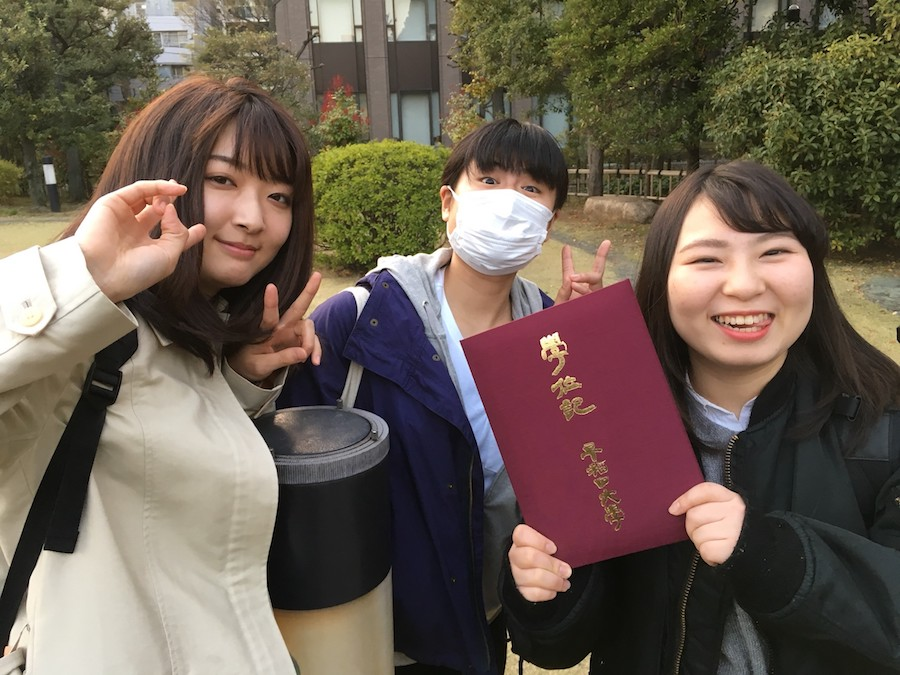

写真館【卒コン2018】
3月26日に、卒業される53期の先輩方の卒コンが行われました。

大隈講堂に集合しています。
卒業式の後なので卒業生で周囲はガヤガヤしています。
卒業式の後なので卒業生で周囲はガヤガヤしています。

今年は大隈講堂の前に人が多すぎたため大隈庭園に移動しました。
集まって下さった先輩は太田先輩オンリーでした。
忙しいですからね…。
集まって下さった先輩は太田先輩オンリーでした。
忙しいですからね…。

大隈庭園に集まってから何をするかというと…もちろんアレです。
まずは桑原(55)による『人生劇場』から。
まずは桑原(55)による『人生劇場』から。

外なので普段よりも大人しいです。
次は持田(55)による『紺碧の空』です。
学ランがとんでもなくシワシワでした。
学ランがとんでもなくシワシワでした。
ちょっと盛り上がりました。

最後は銀平(55)による『早稲田大学校歌』です。

肩を組む時間が長すぎて疲れちゃいました。

という感じで桜がイイ感じの大隈庭園での卒コンでした。

この後はまんぷくにて宴会が行われ、大いに盛り上がりました！
卒業される53期の先輩方、お忙しい中お集まり頂きありがとうございました！
ご卒業後の活躍を同好会員一同、祈願しています！
卒業される53期の先輩方、お忙しい中お集まり頂きありがとうございました！
ご卒業後の活躍を同好会員一同、祈願しています！
(写真館へのコメントは全て管理人がしております。)